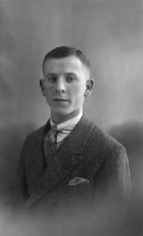

1988
SATURDAY 28th MAY 1988
The death of my father8.21pm. We have spent another day and a half at Paignton Hospital where I spent nearly all night at Dad’s bedside. Mam, Clarice and Julia are there tonight, camping out in the waiting room. We had not been intending to leave until later in the day, but came away at 11.40am. as there was nothing much we could do, and the longer we stayed the tireder we became, making the drive back even more difficult. We were dropping off to sleep driving up the motorway, got back at 1.15pm, and slept all afternoon, Freda until 6.30pm. Mam has “grown” 50 years in 5 nights. From praying “O Jesus, give him back to me” on Thursday night, she was this morning talking to Dad about his impending departure and ultimate reunion of us all together. Earlier, I was talking to Dad about his coming death and asked him if he had any fear at all. He paused the briefest moment and said firmly “No.” When we left him this morning he seemed very serene. He also told Mam and me, “I shall be going in five minutes.” “Five minutes?” I asked. “Yes,” he said, but as no phone call has come through we assume he is still hanging on. I sat with Dad right through until 3.00am. when the morning staff gave Dad another injection. From time to time he would struggle and try to climb out of bed, but I took him on a “conducted tour of heaven” so to speak, feeling that at some level this would penetrate his consciousness. He seemed close to death, his eyes, unseeing, sunken back into his skull. Freda was asleep on the floor of the waiting room, with blankets and a pillow given us by James, the night porter. I lay down too, and slept for an hour or two. When I rejoined Dad towards 5.30 he was much better, a little delirious but not distressed. At one point he said, “Thirty-seven,” which he affirmed was what he meant when I repeated it. Later he said, “92,” and I said, “Do you mean 92 years of age?” to which he replied “Yes.” He mystified me shortly afterwards: “I C F O.” Clarice said he has repeated these initials to her, but none of us has the slightest idea what they mean, if indeed they mean anything. Dad was sleeping very relaxedly and improving visibly as daylight strengthened. Suddenly he said, “That’s it,” very firmly, and when I asked him what he was referring to, he said it was the road to Oxford, where we took him and Mam one day before he had the stroke. Later he said he was in Glastonbury and wondered who might be buried there, then he seemed to be on the motorway. <#880528cont#> All the staff at the hospital have been wonderfully kind, and especially Sister Winsor, who has been on night duty this week, She said how important it seemed to be to Dad to have someone’s physical presence during the night hours. She had sat holding his hand the night before. Mam and Clarice & Julia have slept the last three nights at the Hotel, after spending the whole day with Dad. About 7.30am Freda & I went for a walk to get some fresh air. There was already a lot of traffic, and visitors arriving for the Bank Holiday weekend. The weather was cold and windy and miserable, and it rained later on. We crossed the railway line by the footbridge as the level-crossing gates were closed for an Inter-City 125 train, and down towards the Pavilion, and then retraced our steps, again crossing the line by the bridge as this time a local train was approaching from Torquay. Back at the hospital Sister Winsor gave us the address she had obtained from an auxiliary, where the family might stay to be near Dad. The cost was £13.50 per person per day: bread, breakfast and evening meal. But at £67.50 per day for the 5 of us, the cost was way beyond our slender means. At 9am I drove to the hotel to collect Mam and the girls, and to take their luggage into the car. This has all had to be off-loaded into the hospital waiting room. While at the hotel I had a wash and shave, having taken the toilet bag and razor with me to the hospital. Freda and I then went to Millburn’s café just down the road (where we had a jacket potato on Tuesday) and breakfasted on a slice and a half of toast and a cup of tea. The girl there comes from Sunderland, as she told us when we commented on her County Durham accent. After this late breakfast we did a little shopping, for bread and tea-bags, then returned to the hospital. The girls said there was no point in staying longer now that they were there, so we looked in on Dad again, who had been washed and shaved and looked more comfortable, then at 11.40am we got off, grateful to be able to return before fatigue made it impossible to drive. As it was, I had the greatest difficulty in staying awake. We had left Summerlands at about 9am yesterday. |
Clarence Williams as a teenager A portrait by Laurence Studios in 1927 |
SUNDAY 29th MAY 1988

BANK HOLIDAY MONDAY 30th MAY
Responsibilities8.35pm. I got up before 5am to pay the milkman, whose milk float I heard coming up the hill; we owed him £2.08 for 8 pints. I made us a cup of tea then went back to bed until nearly 8am. We planned to return to Birmingham today after an early lunch. I spent the morning answering letters and copying tapes, and Freda did the ironing, the packing and the lunch. Then Julia phoned to say the funeral would be at 11.30am on Thursday at Robin Hood. When I enquired what the arrangements were for afterwards as I wanted to advise David Shrisunder of the time of our arrival in Glasgow, she said, “That doesn’t matter.” All this last week; indeed, whenever we see Clarice and Julia, they castigate us for not putting the family first, not doing what they want, not selling Springfields, not giving up the work. They simply do not accept that we have any responsibilities whatsoever, or that anything we do is of any significance at all. “If you thought anything at all of Dad, you would have cancelled everything.” By this time it was obvious we were not going to be able to get back to Birmingham today. After lunch I did the washing up and several jobs in the office, then we drove down to Bere Lane to leave notes for Mary and for Jackie & Allan (none of them at home) about our movements for the next 10 days. Irene Harrison was working at 59A, and while we were there Harry arrived, having been to the tip at Street. They had dismantled the cooker, so I helped Harry load it into his car and bring it here to be put in the garage until we can sell it. After this we drove into town to post the letters, then to Camelot Press to leave a note for Janet & Michael, then to Street to take Eva’s phone bill to the solicitors for them to deal with, then to Walton to fill up with petrol at Pursey’s, then to Mr Barker’s to leave a note for him, then to The Willows to buy a couple of sacks of peat. By the time we got back it was 4.30pm. We then had a long phone call from Doris Collins to enquire about Dad. She had had a strong feeling today that Dad had gone. The conflict between her and Michael Black seems quite dreadful and no doubt explains the feelings of apprehension I have had about this tour almost from the start. It really does look as though Michael is exploiting Doris in order to promote Julie [Julie Rogers] and taking a handsome fee for Julie too. Doris seems really to have got it in for Julie. She said she would not be able to sit in the wings (as we normally do before the show) and watch her sing. Last time Doris phoned, she told me to “introduce Julie and get her off” and to “get the band snazzled off”, and I wrote this down as she said it — and today she told me not to give her a build-up and to cut short her applause. The 3–piece band has already been dismantled and a pianist substituted (but Julie “can’t sing to a piano) — this to cut down the budget — but another worry is that (according to Doris), Michael has done nothing to promote the meetings. Philip [Doris’s husband] came on the line to say he was sorry about Dad, and also to say his piece. It really is an extraordinary situation we have to deal with on Thursday. This evening we have watched the video of the BBC Everyman programme about Medjugorje. What with one thing and another it has been a pretty bleak day, and the weather has been depressing too, with heavy rain showers throughout the day and only occasional glimpses of sunshine. |
TUESDAY 31st MAY
Do I recognise myself?7.43pm. I was awakened at 7.30am by the postman coming. There was a letter for Freda from Ann Price, who has had an operation recently, and for me from Doreen Lewis, who so very kindly sent us £10 to help with the extra expenses involved as a result of Dad’s illness: she was one of the people I had replied to last week. Doreen also sent a lot more stamps torn from envelopes, some so old that they included several George V, and one postmarked 1889 of Queen Victoria — a pity she hadn’t preserved the whole envelope. I spent the morning answering letters, including one from Jonathan [the Revd Jonathan Robinson], who had asked me to preach for him at Burrowbridge, also at Stoke St Gregory. I accepted for July 17th, D.V. Ann said she and Geoff hoped to call here on their way to Plymouth on July 10th, and could bring Eva from Billericay, or else collect her on the way back. Freda wrote to Ann and also to Eva, whom I owed a letter to. Julia phoned, and the feelings of exasperation and annoyance I felt yesterday vanished completely (as they always do, happily! Writing them down in my Diary is normally sufficient to dissolve them). The call was to ask what we wanted to do about flowers for Dad. They will get something simple in an oasis for us. I have written our own card — congratulating Dad on his arrival etc. — which we have to drop into Hector’s the Florist’s on our way into Birmingham tomorrow. The funeral will be from 276 Wake Green Road. Clarice has slept there with Mam the last two nights. She seemed to be bearing up well, Julia thought. Dad’s body was being brought up the motorway today, I should think. Malcolm had not yet been able to contact the SDA minister to conduct the service. I have said I will gladly officiate if they would like me to do so. About midday we went shopping. The town was jammed with traffic, it being market day as well as all the visitors. We saw James [the Revd James Turnbull] sitting in the window of the café opposite the Abbey as we drove past, and hoped we might see him later. We didn’t, but we did see Patrick [the Revd Patrick Riley] at the bottom of High Street, puffing away at his pipe as usual. I had phoned him immediately after hearing of Dad’s passing, and he especially asked after Mam. Before this I had popped into St John’s to pick up this week’s Abbey Five News, which we missed on Sunday, and going to Eucharist, also the June Diocesan News. Freda met me in the church: I had dropped her off before parking the car, and she had posted the letters and bought stamps, and then, unthinkingly, gone to the bank to cash two uncrossed postal orders. I had to go to the bank to sign the slip. I felt very tired again after lunch — the events of the last week seem to have left me drained — so I lay on the settee to read Famous Shrines of Our Lady [by H.M. Gillott], which is one of the books I most treasure. At the shrine of Our Lady undercroft at Canterbury; before her statue at the Old Palace, Mayfield, and in the crypt of Bosham Church, I implored her help in my seeking Ordination. Eventually I went to sleep for a few minutes, then while I was in the bathroom the phone rang. It was Sir George [Trevelyan] (but Freda hadn’t recognised his voice). I had written to him on the 3rd but his secretary was away having a baby and he had been overseas. Did I still require a letter for the Bishop? I said Yes, and also told George about my experience of Dad’s passing. I went to the post and got wet walking back along the Avenue in another heavy shower, and had not long returned when George phoned again. He had dictated a letter to the Bishop, which he read out to me — a very generous testimonial — and George asked me if I recognised myself? “Well,” I said, “I hope the Bishop [of Bath and Wells, the Rt Revd George Carey] doesn’t think I am after his job.” While writing the above paragraphs James Turnbull has phoned: we are invited to have coffee with him and Rosemary on 22nd June in the evening. So much has happened over the last week and much of it I have had to leave unrecorded, especially last Friday’s happenings. I like to get everything down at the time so that there is no unintentional embellishment. The last few weeks especially have been so full of blissful experiences and ecstasy. Dad too seemed to be wonderfully at peace, but excited about going on holiday. He slept much during the time he was in hospital, but I spoke to him about his dying, tried to prepare him for it in every way, and to quiet him when he became delirious. All week though, I was aware of a loving group of people beginning to gather on the other side, and of 60 or 70 people being present at his arrival. I saw a young woman, no more than 21 or even younger, in a lose-fitting blue and grey dress (? shift) with deep sleeves; a very dapper young man of about the same age, in a smart suit, with twirled moustache and carnation in his buttonhole; a pleasant-looking lad with ? grey flannel trousers that ended below the knees, and beside him a girl a little older. They had a red ball and a sort of baton, and there was a small dog whose name I knew to be Tipsy or Topsy. Granma I had not seen since the day of her death on 24th November 1946, and the others not since the early 1960s. I got the feeling of Benny Morgan being one of the earlier people awaiting Dad’s arrival. Interestingly, Dad mentioned him during the week. (“This hospital is built in Benny Morgan’s front garden,” he said). “The Dummy” was there, a deaf-mute workmate of Dad’s whom no one has mentioned or even remembered (so far as I know) for years. Mr Moore was there; all Freda’s folk (very kind of them); some former neighbours from Circular Road; various people I knew and lots more I didn’t. I wish I had made a note of them. Dad arrived in a blinding flash of light, something like the effect of a mirror or window suddenly reflecting the sun’s light. He was accompanied by two beings of light, one on either side of him, but I got the impression that they were not visible to the assembled group. Dad seemed dazed by the reception. I got the feeling that he was being “wheeled off” and that he has been sleeping and recuperating since. In his sleep I heard him call out for Mam. |
THURSDAY 2nd JUNE 1988
Birmingham Hippodrome12.14am (Friday). We have just been having a plate of sandwiches for our supper, brought back from the Hippodrome, where we didn’t have time to eat them. Despite all our misgivings and the ill-feeling between Doris and Michael, we had a super show. As usual I “plugged” Doris’s books and promised she would autograph them, so she had 60–70 to sign in the dressing room afterwards. The Sun has sponsored this “farewell tour” of Doris’s, and they were there tonight to interview her and to report and photograph the proceedings. I had my hands full from the start. We got to the Hippodrome a little before three, and as I am the only one who has ever worked with Doris — Keith Crabtree being no longer with us — it fell to me to organise the stage and to brief everyone, etc. Laurie O’Learie, who was formerly with Doris Stokes and has been brought in by The Sun to try to relieve the situation, appeared later but so talked our heads off that Freda and I had less than an hour in which to walk up to New Street to get something to eat. We went to Pizzaland and had a very nice slice of blackcurrant cheesecake and a pot of tea. After we got back Doris arrived and was full of angry complaints about Michael for his mishandling of everything. She had intimated to me that she would not even be there to hear Julie Rogers sing. So, just before I went on to open the show, I was greatly relieved that she came down the steps with arms outstretched to Julie, and the two kissed. As soon as Julie had finished her 10–minute spot though, she and Michael left the theatre, which was a shame because Michael has still not seen how Doris works. The only unsatisfactory in the whole evening was that hundreds of seats remained unsold. All the seats were being sold by The Sun, and as recently as last Friday, when I bought a copy at Paignton, they were expecting people to fill in a coupon and send it with £5 to The Sun, who would then send them a ticket for tonight’s performance. The postal service simply isn’t efficient enough for people to even attempt to obtain tickets in so short a time. |
FRIDAY 3rd JUNE
Dad’s funeral9.09pm. We have had torrential rain today, Dad’s funeral. The only time the sunshine broke through was as we stepped out of the funeral cars for the graveside committal. The service over, I announced that everyone was welcome to have lunch at 276 Wake Green Road, and as we all trooped back into the house, again in heavy rain, our shoes were caked in inches of clay and many of us went indoors in stockinged feet. Mam and Clarice & Julia and Freda, whom I had dropped off at ten past nine, had prepared a sumptuous feast. We had a houseful of people, most of whom stayed an hour or two, but a lot of food was left over. We drove in two funeral cars behind the hearse; probably other cars followed, but with the torrential rain, steamed-up windows, and Mam’s distress, I didn’t notice. But the chapel at Robin Hood cemetery was pretty full, around 60 people, I would think. The service was led by the young 26–years old SDA pastor and an address by John Saxby. Freda and I hardly recognised Dad from John’s eulogy of his (Dad’s) evangelistic fervour and scriptural awareness, but Dad was well-liked by the congregation at Camp Hill. Very few came because there was no opportunity for them to be informed. During the service we sang “The Lord’s my Shepherd” and “O love that wilt not let me go”. Unfortunately John’s sermon used only those scriptures which support the “soul-sleep” doctrine, i.e. the utter annihilation of consciousness until the coming of Christ in judgment. It is a soul-destroying doctrine. Win Maund phoned this morning before 7.30am and I told her of Dad’s death. Then, after leaving Mam and the rest of the family soon after 5pm, we called to see her. She was looking much better. I shared with her our experiences of Dad’s passing, and she told us about giving her testimony at Hall Green Methodist Church on Easter Day. George Maund, who has Alzheimer’s disease and doesn’t own her as his wife, has been away for two years, first in Selly Oak Hospital and since then in Magnolia House, and Win is breaking free to become her own person for the first time in her life. George had stopped her being and doing what she wanted with his jealousy and possessiveness. Only recently, as a result of a neighbour’s inviting her to a service at our Methodist Church, has she begun going there. She thanked the minister for his sermon one day, and as a result he called on her and asked if she would giver her testimony, which she did, without a script and from the heart, and it touched a lot of people. |
SATURDAY 4th JUNE
To Scotland10.59pm. We are at David and Margaret Shrisunder’s home, The Rectory, 5 Brownside Road, Cambuslang, Glasgow; left Springfields at 6.24am and arrived at 12.25pm after a very good journey up the motorway: a nice day, plenty of sunshine earlier on but we had a little rain as we crossed the border into Scotland. We stopped for coffee and a pastry at Westmorland Service Station. We would have got here earlier but I forgot David’s address and we went to Uddington (where I am to preach tomorrow) instead of Cambuslang. We have had a lovely time of fellowship with David & Margaret today; we were last here in October in 1985 but shall not be able to come again as they are returning to India for good in a few weeks. Margaret cooked a nice lunch for us, which we had in the kitchen, then David and I spent almost the entire afternoon discussing my ordination and a whole lot of other issues, some theological. David was able to find something out for me which I have been wanting to know for a long time, viz. the New Testament Canon of Scripture dates from the Third Council of Carthage in 397. After tea we waited for folk to arrive for the informal meeting David had arranged for this evening. There were only nine of us but the meeting lasted 2¾ hours and we had a happy time of fellowship discussing the gifts of the Spirit etc. |
SUNDAY 5th JUNE
Glasgow Pavilion12.02am (Monday). In our room, No. 340, in the [check] Ewington Hotel, Queens Park, Glasgow. I compered tonight’s show with Julie and Doris at the Pavilion Theatre. Despite cramped conditions on stage and as poor — squalid — dressing rooms as we have encountered anywhere, it was an outstandingly successful show. I was awake at 4.30am and got up early. I spent a little while with David in his study. After breakfast he and I went to Matins at the adjoining St Cuthbert’s Church. A deaconess conducted the service. Afterwards there was just time for me to drive us to David’s other church, St Andrew’s, Uddington, where I preached at the Communion service which David conducted. I had already decided to expound the appointed N.T. reading, Acts 2:37– 47, and this was singularly appropriate as David baptised a young girl, Alison Keen, 15, from New York, whose grandfather has been a member at St Andrew’s since 1915. After the service we had tea and biscuits in the Church Hall, so did not arrive back for lunch until 1.30pm. After lunch we drove here and booked into our room, then drove to the Theatre. A new musical show, The Celtic Story, is currently on there, consequently the stage could not be cleared, and we had to perform tonight to a background of what were probably supposed to be football terraces. Laurie was trying to work out where to get everything in when we arrived at about 4pm. Julie was just leaving. He had seen to most of the arrangements so there was little for me to do. However, we had had such a job finding the theatre that we decided not to return to the hotel. The sandwiches were already in the dressing rooms. Freda picked out the salad ones for us, and we ate them, together with a biscuit, also a banana and grapes, in the car. Afterwards we walked around the various streets in the vicinity, and went by the Scottish Television Company, and the Theatre Royal. We also walked up and down Sauciehall Street, which is now in the process of becoming a pedestrian precinct in which mature trees have been planted. The streets were bathed in sunshine, the sun having shone all day. Doris arrived in angry mood, still incensed against Michael for his incompetence; she said he was nothing more than a spiv. She said, “Tell Michael I want to see him.” Seconds later I found him just coming up the steps and told him Doris wanted to see him, but he said he didn’t want to see her as he had got a bad cold. This annoyed Doris still further, and there is no placating her when she is like this. Later, as we stood in the wings waiting for me to start the show, Doris was telling Julie what she thought of him. |
MONDAY 6th JUNE
Coniston8.20pm. We are spending the night at Beech Tree Guest House, Coniston, in the Lake District. We arrived at 3.20pm, having driven down from Glasgow this morning. On the way we called at David and Margaret’s to collect the battery-charger we had left behind. David was out but Margaret gave us coffee and made us rolls for our lunch. We ate our lunch by Lake Ullswater, having earlier visited Pooley Bridge. This house is the Old Rectory and accommodated the local incumbent until last year. |
TUESDAY 7th JUNE
Beatrix Potter9.04pm. We have had a beautiful sunny day. After breakfast at 8.15am we drove the short distance to the end of Coniston Water and fed the fish with sandwiches left over from the Glasgow show. From there we drove by Elterwater and fed a duck, gulls, a family of swans and a pair of geese, after which we went to Saurey, where we had coffee at Anvil Cottage, served us by the elderly Mrs Green. Next we spent about a couple of hours at Hill Top, Beatrix Potter’s cottage. I bought Freda a copy of The Tale of Flopsy Bunnies, which she remembered from her childhood. We had lunch in the car, overlooking Blelham Tarn. I read more of The Sacred Shrines of Our Lady. We went for a short walk then drove on to Ambleside. Here we visited Mater Amalsitis, the very modern Catholic church, after which we had a pot of tea and, between us, a vanilla custard slice. On the way back to the car we called at the second-hand bookshop — I am hoping to obtain Volume II of the book on Marian Shrines. After rejoining the car, which was parked outside the R.C. church, we filled up with petrol, then drove to Stragshaw Gardens, where we spent the remainder of the afternoon. They had a beautiful display of rhododendrons and azaleas. We arrived back at Beech Tree Guest House in time for supper at 6.30pm, a very nice meal, at which we were joined by a German couple, ten years older than we. They are on a cycling holiday. After supper we went for a walk. I have been writing this in the lounge, where we have TV on. We have to go to Liverpool tomorrow, where we have the show at the Empire Theatre. |
WEDNESDAY 8th JUNE
Liverpool1.43am (Thursday). Back home at Springfields. We arrived at 12.55am after driving down from Liverpool, where I compered for Julie and Doris at the Empire Theatre. We began the day at Coniston. We had a very peaceful and happy time there. After saying Goodbye to John and Jean West, the proprietors of Beach Tree Guest House, we walked into the town and began making the ascent of Coniston Old Man by the road. We climbed a few hundred feet [unfinished] |
THURSDAY 9th JUNE
O-Levels9.09pm. Back home at Summerlands. We got to bed at 2.30am, and got up at 8.15am. After breakfast we packed again and loaded the car, then went to see Mam, spending about an hour there. We delivered a note to Mr Baker’s at Primrose Lane, did some shopping in Solihull — we met Noel there doing some shopping — then went to Julia and Malcolm’s, where we had lunch (cheese omelette, and ice cream). Clarice was there, also Alexandra (who is doing O-Levels); Noel arrived later, also Malcolm, who had some lunch with us. We arrived home at 5.35pm, rather later than we expected but below Tewkesbury [unfinished] |
FRIDAY 10th JUNE
Francis Moreau10.27pm. We had a Bible Study today for the first time in a month [B.S. 1085, Is the Church on the Way Out … or In?]. Francis Moreau came and made a very useful contribution. He is over here from Urbana, Illinois, and plans to go to Medjugorje shortly. Francis was last here 2½ years ago. We were very tired and did not get up until 7.15am. During the morning I wrote up the accounts and Giro slips, sent a cheque off to pay our deposit on a Pilgrimage to Walsingham, paid two other bills, and wrote to Peter Drake-Brockman from whom five letters had come in. Francis called; I did not recognise him at first. Later we went to Camelot Press; we passed Janet on the way. I paid Michael £72 for the typesetting of PTH [The Power to Heal], and then got him to make five photocopies of the testimony Sir George sent me for the Bishop. He also made a copy for me of a letter from Keith Parker expressing appreciation for my “Gnostics” lecture [B.S. 1083 The Gnostics and their Gospels, Open Mind, Bognor Regis, 20/5/88], which I thought I might send to the Bishop too. I collected Nancy Bressey, Eva Marsden and Mary Le Masson as usual. Helene came to the meeting too. After taking the ladies home I had a bath and washed my hair. Tomorrow we expect to be in Folkestone. |
SUNDAY 12th JUNE
Wembley Conference Centre11.37am. I was too tired last night to write anything. We have just been for a walk along the sea-front at Folkestone and visited an open air market, also looked at a display of paintings by local artists, and had a cup of coffee at Leas Cliff Hall café. Now we have returned to our room, No. 345 at the Burlington Hotel and shall be leaving in a few minutes for London, where tonight’s show is at the Wembley Conference Centre. Afterwards we have to drive down to Worthing. We set off from Summerlands at 7.55am yesterday (Saturday) morning and drove here the same way as last autumn, using the route guide supplied me by the A.A. We have been getting a route map for almost all the places we have been going to, also a street plan showing the venues we have been heading for: they have been very useful |
MONDAY 13th JUNE
At Worthing — the show must go on2.39am (Tuesday). Summerlands. We arrived home from Worthing at 1.47am, left there at 11.50pm, so the journey of about 125 miles took us 117 minutes. We were at Worthing Pavilion tonight. The show was sold out but it looked at one time as though it would never take place. There was the most fearful trouble between Doris and Julie. Doris refused to go on. She and I were in a dressing room on one side of the stage, Julie in a flood of tears, in the dressing room on the other. Doris would not allow me to start the show or even introduce the pianist. It was a scorching hot day. The central heating was on in the theatre and could not be turned off; the packed audience was wilting but excited. I was kept running backstage from one dressing room to the other, trying to mollify Doris and comfort Julie. I even brought Freda in to help. Eventually, at nearly 8pm, I went to Doris and told her, “Julie says she is very sorry”, and then to Julie and said, “Doris apologises” — which was not exactly (or even remotely) true — “but wants you to come and say sorry.” I led Julie through all the junk and dirt backstage to Doris’s dressing room, and left the two together. There was another altercation, and when Julie emerged and we went back to her dressing room, she was sobbing her heart out. I consoled her, asked if she was alright to go on, went on stage, took the microphone and got the audience laughing, then brought Julie on. She came on to a huge ovation, belted out her first song and gave a tremendous performance. It was simply stunning. Then she and Michael left, I gave Doris a huge build up — she was beaming, larger than life, in the wings — and she too gave a remarkable performance. An incredible night! |
TUESDAY 14th JUNE
|
9.58pm. We are within a week of the longest day. In Glasgow last week we noticed that it was still light at 11.30pm. When I retired to bed at 2.50 this morning dawn was already lighting the sky in the north-east, over the Mendips. The sun appeared to roll down Brent Knoll when it set tonight. Today has been sunny and warm. We slept until after 8.30am (but I had wakened earlier) and did not have breakfast until after 9am. Afterwards I went outside to water some of the plants which had been drying up since we left here on Saturday morning (which seems ages ago). Then I got the mower out and mowed part of the upper lawn. We had coffee in the garden then went to town to do the shopping. After we got back I wrote to the Bishop enclosing Sir George’s testimonial letter and a copy of a letter from Keith Parker about the response to my “Gnostics” lecture. I also wrote to Jonathan Robinson and Patrick Riley. After lunch I finished the letters, posted the Bishop’s and Jonathan’s, then delivered Patrick’s. I happened to see Frances Coxwell fall over in Lambrook Street, so gave her a lift to the Post Office. After I got back we had a cup of tea in the garden and I finished mowing the upper lawn. I had a phone call from a Will Aaron requesting information about the Bacon-Shakespeare controversy. Later in the afternoon Theresa Wheaton appeared, accompanied by Wendy Wright, and I took Wendy for a walk round the garden. After they had gone we had tea in the garden, then I came indoors and slept for an hour or more. Dr Mary Martin-Bacon phoned, having just heard from Theresa of Dad’s death, and asked about the meetings with Doris (whom she knew a great many years ago), and I told her very briefly of the great difficulties we have had. Afterwards I rejoined Freda in the garden; I did some more mowing and then helped with the watering. I forgot to record that Nancy Never phoned from Chichester just after I got up. She was in great pain after hurting her back. Wendy told us this afternoon that Jim Denham is very ill in hospital. He has motor-neurone disease. |
WEDNESDAY 15th JUNE
Badger12.19am (Thursday). We have just been watching Badger eat his nuts and buttons; Freda had not seen him before. I got back home from Weston a few minutes ago. I spoke at the Wessex Research Group meeting at Margaret Grier’s. Sally Ricardo, Sylvia —- and Gwen Giebels came, and Francis Moreau accompanied me, so we were six in all. Alec and Valerie and several other “regulars” were missing, also John Waite and Jacky. It was a scorching hot day, so the heat may have had something to dip with it. I read Isaiah 49 and spoke on Britain in Prophecy [B.S. 1086] and we had the usual lively discussion afterwards. |
THURSDAY 16th JUNE
|
10.21pm. We have spent all evening from 7.30pm working in the garden. Julia has just phoned to say that Mam is unwell: a neighbour saw her reeling about in the garden and phoned Julia. The doctor says it is possible she has had a slight stroke; it is more likely that she has not been eating. |
FRIDAY 17th JUNE
Chalice Well10.03pm. Freda had a headache yesterday and felt breathless. I thought she might be anaemic, so in the afternoon, 3.15pm, we went to town, Freda went to the bank for me and we bought some watercress, then we went to Chalice Well to drink a few glasses of the water. While we were sitting by the lion’s head, Francis Moreau appeared. He had just been with David and Ann Jevons and was on his way to see us to ask if he might come a little earlier tomorrow (i.e. today, Friday) to wind the videotape to the required section. Nonie Michelli was on duty at the Well. She and Niek had had an upset as a result of which she had intimated that he had thrown her out. The misunderstanding has been cleared up but Nonie seemed grateful for the opportunity to confide in someone. Instead of the usual Bible Study we used today’s meeting to show videotapes of the apparitions of the Virgin Mary at Garabandal (1961–65) and Medjugorje (1981 to date; next Friday will be the 7th anniversary of their commencement). Francis came — the Garabandal tape was supplied by him — also Helene, Theresa Wheaton, Margaret Coles, Caroline Nompozolo (the African lady who lives here and runs a White Eagle branch), Brian P. Smith of Langport, and Coby Boutkan from Holland. We had met Coby earlier in the day at Chalice Well, where we went to drink some more water. Nancy Bressey was away in London, and Mary Le Masson phoned this morning from Bristol to say she was looking after a sick cat for a friend and would not be able to come; I did not call for Eva Marsden as she would not have been expecting me. After the meeting Margaret asked me to pray for her healing. After the folk had gone Francis stayed a little longer. He was wanting to go to Newbury tomorrow, so I have said we will take him on our way back to Birmingham. Francis has loaned me the videotape until tomorrow, so this evening we have been able to watch and audiotape two other programmes, one a BBC programme, Garabandal — After the Visions (1970), and another on The Rosary Illustrated. We have also watered the garden. In the morning I copied a dozen tapes for Sir George from a couple of master-tapes he had sent me. On the first of these I had to erase 3 mins. 28 secs. from the end of Track 1 and beginning of Track 2, and a further 20 minutes at the close of the message, the message having been recorded on a tape which already had another talk on it. |
SATURDAY 18th JUNE
Avebury and Silbury Hill8.40pm. Back home at Springfields. We arrived at 5.47pm, having dropped Francis off at Newbury at 1pm. He arrived at Summerlands at 9.35am — we had just returned from town, where we had posted letters and bought rolls etc. for our lunch — and we called at Bryan Winter’s home, on the way out, to collect Francis’s things. So it was about 9.45am when we left there. We drove to Newbury via Shepton Mallet, Frome, Westbury and up to Potterne, where we had a cup of coffee and a scone at The Chocolate Poodle, then via Devizes to Avebury. Here we parked the car and spent a little while visiting the stones. From there we drove by Silbury Hill to Marlborough, Hungerford and Newbury. After dropping Francis off we drove up the A34 and under the M4 motorway and down a quiet lane to eat our lunch. I read a CTS booklet, Walsingham is for Today. After resuming our journey we had a long delay as we approached the Oxford ring road, and listened to the Test match on the car radio. We then continued our journey up the A34, stopping at Woodstock for an hour to have a pot of tea and carrot cake at the 1627 coffee house. Before breakfast this morning I had a bath and washed my hair. Later I answered a couple of letters from Nelson Cogbill. |
SUNDAY 19th JUNE
Nottingham Royal Centre2.21am (Monday). In bed at Summerlands. We arrived home from Nottingham at 2.05am, having travelled non-stop from the Royal Centre, which we left at 10.20pm. We had an excellent journey, first on the M42 and then by our usual route from Birmingham, by the A435 to Alcester and Evesham, then down the M5, terming off a Junction 22 to take the cross-country way home as usual. |
MONDAY 20th JUNE
Buckfast Abbey9.36pm. Our 29th Wedding Anniversary. We celebrated it with a delightful day spent at Buckfast Abbey in Devon. We were awakened at 7.55am by a phone call from Canada. It was Mrs McEwan from the B.I.W.F. Toronto, asking if I would be free to speak at some meetings there on our visit in August. We arranged meetings for Saturday August 6th at Paris, Ontario, and on Sunday the 7th at B.I.W.F. headquarters, Toronto. It was a beautiful sunny day. Over breakfast we decided to visit Buckfast Abbey. After breakfast I did the washing up and did some watering in the back garden. The pile of sandwiches which I put out at ten past two this morning, brought back from Nottingham, had all gone, all taken by Badger or the birds or both. We left for Buckfast at 10am. We called first at Street Library to have a look at last week — Thursday’s — Guardian, which contained a lengthy article, “The Sun Rises on Doris 2”. There was an unflattering photograph of Doris ministering to a patient in last week’s meeting at Wembley with me assisting and holding the microphone. We filled up with petrol at Pursey’s then drove down the M5 at 70 mph as we were wanting to reach Buckfast Abbey in time for Mass at midday. We arrived at 11.40am and were among 20 people to received the sacrament, in both kinds. It was a remarkable occasion, reminding us that we received Holy Communion at our marriage 29 years ago. Today was also St Alban’s day — he is very special to us. The Old Testament reading was from 2 Kings 17 about the 10 tribes being taken into Assyria — “There was none left but the tribe of Judah only” — and the N.T. reading was another favourite passage. After attending Mass we had a nice lunch of cheese and onion quiche and salad, which we ate outside in the lovely sunshine. There were sparrows and chaffinches hopping on and around the tables to eat what people had left. After lunch we visited the shop and bookshop. Freda bought a bottle of Buckfast Tonic Wine and I bought a beautiful book, In Praise of Mary, a compilation of hymns from the first millennium of the Eastern and Western Churches, and 39 miniatures in full colour. I also bought two little medals, also an illustrated pamphlet How to Pray the Rosary, and three CTS pamphlets, A Study Guide to the Final Report of the Anglican and RC International Commission, Infallibility in the Church, and Meditations on the Rosary by Pope John XXIII. |
TUESDAY 21st JUNE
Still no rain10.26am. We have spent this evening in the garden. I spent over an hour trying to dig out a post supporting the lilac tree on the upper lawn. After digging down a couple of feet it is still firmly embedded in the clay and will not budge. Patrick phoned the other day and came at 5pm to catechise us in preparation for our Confirmation. Again he kept on about Doris Collins and I had to say to him, “It is we who are being confirmed, not Doris Collins.” I think we have finally convinced him that I am not a spiritualist; at least I hope so. I got up at 7 this morning and spent until midday answering letters, then I took Freda to Street to do the shopping. After we get back Freda went over to Neill to tell him his car lights were on. He invited her to see their garden, so we were late having lunch. We had our meal here in the TV lounge and watched the play on the second day of Wimbledon. Martina Navratilova, Chris Evett, Steffi Graf, Jo Durie and John McEnroe all won their matches. During the afternoon I also studied Infallibility in the Church by Patrick Crowley, a C.T.S. pamphlet which I bought yesterday. Later I joined Freda in the garden and I cut the grass around some of the trees, and up to the fence just below the re-sited compost bins. I also trimmed a few branches from one or two small trees growing along the fence, encouraging them to grow into a better shape without interfering with each other. Today has been the summer solstice. The weather has been pleasantly warm but hazy and with a cooling breeze. We have still not had any rain. |
WEDNESDAY 22nd JUNE
|
10.37pm. We have spent a very happy evening with James and Rosemary Turnbull at their home at 34 Hood Close, here on Actis Estate. Their house was built in 1980. Since returning we have been watering the garden front and back. There is still no sign of rain. I spent all morning answering letters then went to the post at 12.30pm. I also got carrots for our lunch. Before lunch I began making a C90 master tape of my Gnostics talk at Bognor Regis, completing this after lunch. I worked in the office until 3.30pm then spent over two hours in the garden, trying to dig out the post from beside the lilac tree. It still will not budge. |
FRIDAY 24th JUNE
Vituperation7.32am. We are in our room, No. 5, at the Castle Keep Hotel, Broadstairs, where we came yesterday for the final meeting of Doris’s tour at Margate. We have had a good night’s rest, Freda has washed her hair and had a shower, and I have had a bath. Outside, it is pouring with rain — the first we have seen for ages — and we are just going down to breakfast. 9.03am. I have been in tears over breakfast. This tour which promised so much has ended in near fiasco. We have never seen Doris work better than on this tour, but except at Worthing, which was a sell-out, there have been hundreds of empty seats, and behind the scenes there has been much evil-speaking and vituperation. I wept for Doris for her disappointment and frustration, and for Michael, the real cause of the trouble, who I believe wanted to do a decent job for everyone but whose self-interest botched everything up. The trouble has blown up again even this morning. Coming out of breakfast we met Doris on her way in. We had a few minutes’ conversation and had said goodbye, and were just saying goodbye to Alfred & Connie’s brother (who has been driving Doris to each venue), when Doris suddenly turned around and said, “Did you get your money?” I had to admit that Michael has not paid me the £329.84 he owes me for expenses. Doris became very angry and said it was my own fault and I should have told her. But I twice gave Michael a list of our latest expenses, and when he said he had lost one of these, I yesterday gave him the complete list again, and when he told me he would send it to The Sun for payment, I said that my understanding was that The Sun had already paid his [£50,000] expenses. 10.01pm. We arrived home at 8.50pm and have since been watering the garden. We had rain at Margate this morning but there has been none here. Doris phoned a few minutes ago. She has been on to The Sun about Michael’s failure to pay my expenses. They confirmed that it was his responsibility to do so; I have now to send them the bill and they will pay it. It has been a momentous day. In the morning we visited the Shell Temple, had coffee. And walked along the Esplanade, Then, on my way out of Margate I suddenly realised, crossing the railway bridge, that we must be very close to where, up to 1955, we used to stay for our holidays. I remembered the address, 23 Grove Gardens, and found it almost immediately. Pulling up outside the house I accidentally held up a lady trying to drive her car into the adjoining property. I asked her if anyone named Ralph still lived next door, and was astonished and delighted to hear that “Bonnie and Jack” were still there. We called in to see them. They remembered me and Mam [unfinished] |
...
|
<#881201#> |
THURSDAY 1st DECEMBER 1988
The trouble with sandwiches8.09pm. I went to Computer class this morning. There were only six of us. Jean Murphy our teacher was unable to be with us, so Bill Henderson stood in for her. He commented on how much work I was getting done; I told him about the book and the fact that I was using two disks, one for the BBC machine I use on Thursdays and the other for the IBM computer on a Monday night. Bill said he would try to find out if the material could be transferred from one disk to the other. I asked Bill if there was any possibility of my doing extra work any time the computers were not in use, and he reckoned I could go on a Wednesday afternoon. If so, this would be a great help. Then Bill asked if I had yet been able to use the Einstein, and when I said no, he suggested that I take the machine there next Monday, and he will take it home and try to work it out. That was very kind of Bill to so put himself out for me. As usual I printed the work I had done, but I did not have time to print all of Monday evening’s work as the class ended and everyone had gone home before the printout could be finished. When I got home Freda said that Patrick had phoned and was coming at 2pm to discuss a few dates with us. A Confirmation class has been arranged for nine weeks commencing Wednesday 25th January, in which we hope to participate, followed by Confirmation on Holy Saturday 25th March. By second post, among others, there was a letter from Jacqueline Colquhoun of Johnstone, Renfrewshire, who was very irate because she had still not received a signed copy of The Power Within from Doris Collins. She had bought a copy at the Glasgow Pavilion on Sunday June 5th. In the meeting I gave Doris’s books such a big plug that we sold 60–70. Doris would autograph them, I said, and, as usual, I asked everyone to put a slip of paper with their name on so that Doris could personalise each book. It was a big job carrying the books from the front of the stage where people were handing them in, to Doris’s dressing room. Unfortunately, the management wanted the theatre cleared, so I had to ask everyone to wait at the stage door instead. All would have gone well had it not been for some unscrupulous person claiming a book they hadn’t bought (in fact, they may not even have been to the show). Jacqueline’s book was missing and by then Doris had left the theatre, so I got Jacqueline to write her name and address on one of my visiting cards, with “PW” on it so that I should know which of Doris’s two books she had bought. I brought the matter to Doris’s attention at Liverpool the following Wednesday but she did not want to know. (She was in a foul mood for almost the whole tour.) “See Laurie about it,” she said. Laurie said he would see to it, but evidently didn’t. The other day I came across the card with Jacqueline’s name and address and “PW” on it, also a tick showing I had dealt with it. I couldn’t remember to what “PW” referred and was puzzled to see the tick by her name but no card in the file, so decided to send her the latest newsletter, which I personalised. Although there was no way in which Jacqueline could know that I was the person concerned, she still managed to identify me and write me a not very nice letter. So I wrote straight back to Jacqueline and then to Doris, asking her to send her a signed copy of the book. A lot of people would not put up with Doris’s unpleasantness. Laurie told Freda and me last week that he had had to tell her about it: folk were comparing her unfavourably with Doris Stokes (whom Laurie managed with such conspicuous success until her death).She was particularly unpleasant at Liverpool. She was signing the books as usual — but not programmes — when she suddenly announced that she would sign no more, and I was left to deal with a crowd of people at the stage door who had bought the book — as Doris well knew — on the understanding that they would be autographed. One young woman I particularly remember. She was in tears, and so angry that she asked for s refund. It took me about a quarter-of-an-hour before she could be placated. The worst experience, apart from her threatening to come on stage and smash everything if I continued to build Julie Rogers up, was at Worthing. It was the only venue where tire show was a sell-out. The theatre was boiling hot — it had been a hot day and the radiators were boiling hot — but I could not open the show because Doris was refusing to go on stage. What happened was that Julie arrived at the theatre and thrust the flyers into Doris’s hands. This was to prove that Michael had exactly fulfilled his instructions concerning the sandwiches at Wembley. Doris had complained that the sandwiches had gone dry and curled up. So they had, but they were not Doris’s (and my) sandwiches. They were what was left of the sandwiches which had been provided for Michael and Julie in the afternoon. The ensuing scene between Doris and Julie was simply unbelievable. And when Doris exploded at Julie doing what she did, that was exactly what I had seen Doris do to Julie a few days before. Doris refused point blank to go on until Julie had gone to her dressing room to apologise. I was forbidden by Doris to have any contact with Julie, but took no notice. In fact I was constantly in and out of the two dressing rooms. Much against her will, Julie eventually agreed to do what Michael and I were asking of her. I escorted Julie to Doris’s dressing room (which was on the opposite side of the stage) and then withdrew. The two women literally screamed at each other, but Doris presumably had her pound of flesh, and Julie, tearful, emerged again. All this time we had a theatre full of people waiting for the show to start. Doris would not let me even go on and introduce the pianist. I think it must have been that evening when I had literally to hold Julie’s hand to comfort her before she went on. Eventually, at nearly 8pm, almost half-an-hour late, I went on stage to open the show and introduce Julie. I do not now remember what excuse I made for the late start, but afterwards Michael praised me for my “professionalism”, as he and Laurie did, more than once. Out there in the audience, no one could have had the slightest inkling of what was happening backstage. Incredibly, Doris seemed to perform even better, if anything, than usual. That last tour of Doris’s was certainly a very difficult one. Having written to Doris this afternoon, I had still others to write, and tapes of Dr David Owen to send to Councillor William Dolman, and as I was sending them my 1989 subscription to the SDP I went to the post at 5.20pm, but the box had already been emptied, the postman actually passing me in his van. So I drove into town to post the letters, 13 in all, at the main post office in High Street. How long it will be there we have no idea, as there is talk of moving it to Safeway supermarket. One of the letters I posted was from Freda to the local paper, objecting to the “lunatic idea”. After tea I tidied the office and typed the labels for tomorrow’s Bible Study tapes. |
Previous chapter || Next chapter || Index || Search